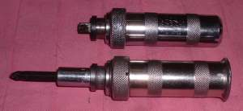
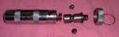
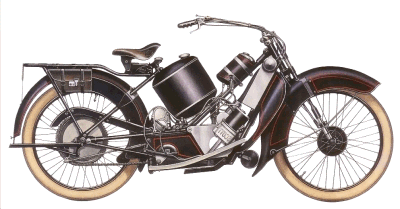
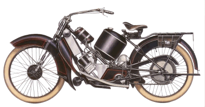

Impact Driver

¶ Well, you got your wrench set and screwdrivers and a hammer. You've got a bike and the desire to fix it but to get into those engine cases off you need one more thing. Your first special tool and probably your most useful special tool. You need an Impact Driver.
Steel screws in aluminum crankcases. As time passes those screws seem to lock in and can seem to be impossible to get out. With an Impact Driver those Philips head screws will come right out with no damage to the screw. Without one the screws will just not come out and you will end up damaging the head of the screw when your screw driver pops out.

To use simply put on the correct bit and turn the tool in the direction you wish the screw to go. You will feel the tool sort of cock its self. Now hit the round end of the driver with a hammer and boom, the screw is loose. Most times anyway. If the head is all buggered up from someone else trying to remove the screw the driver bit may slip out. To cure this try putting some valve grinding compound or very fine sand on to the screw head. This will give the bit something to hold onto. If that does not work you will have to drill out the screw head to remove it.
One other thing to remember. You are hitting this screw with a hammer. Make sure that whatever the screw is screwed into is strong enough to take the blow without breaking. I once had a screw holding the tachometer cable to the top of a twin cam Honda engine refuse to come out. I was too lazy to drill it out and used my Impact Driver. I didnt hit it very hard and it came right out. However, that screw was on the top half of one of the camshaft mounts. Cracked it. Just a little crack too but it was enough. Expensive little beggars too. Fortunately I found a real good used one, but it would have been better, and certainly more professional, to not have broken it in the first place. If in doubt, drill it out.
One final note. If you dont have your Impact driver with you. A tight screw can sometimes be loosened by hitting it BEFORE trying to remove it. Use a screwdriver that has the steel shaft going all the way through the handle, If the shaft only goes through part way all you will do is break your handle. Put the screwdriver on the screw and then hit the end of the screwdriver with a hammer several times. Now try to remove it. Sometimes it helps to twist the screwdriver with your hand as you strike the end. Kind of a poor mans makeshift Impact Driver.

 |
 |
Copyright © 1999-2010 dansmc.com. All rights reserved.